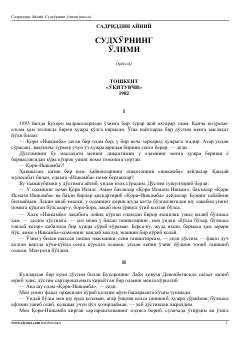

SOOchko'z va baxil sudxo'r Qori-Iškambaning qilmishlari va fojiali o'limini tasvirlovchi o'tkir hajviy qissa.
Ushbu asar o'zbek adabiyotining yirik namoyandasi Sadriddin Ayniy tomonidan yozilgan bo'lib, sudxo'r Qori-Iшкамба obrazi orqali o'sha davr jamiyatidagi illatlar, ochko'zlik va qalloblikni fosh qiladi. Qissa Buxoro muhitida yashagan boy, ammo o'ta baxil va qora niyatli kimsaning qilmishlari va uning fojiali qismatini o'tkir hajv ostida ochib beradi. Asar voqealari real hayotiy lavhalar va chuqur xalqona til bilan sug'orilgan.